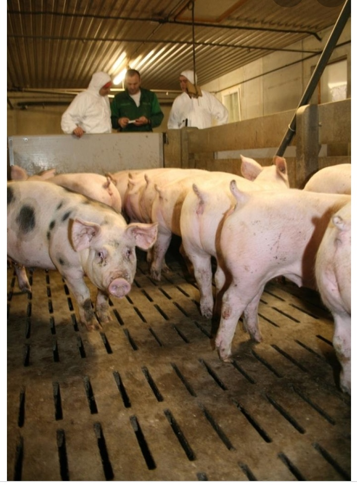
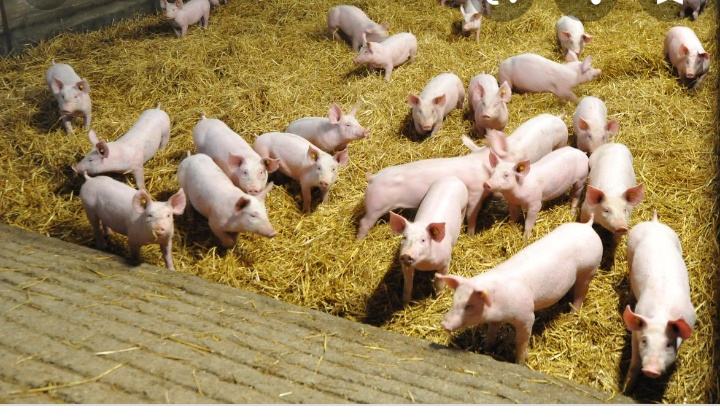
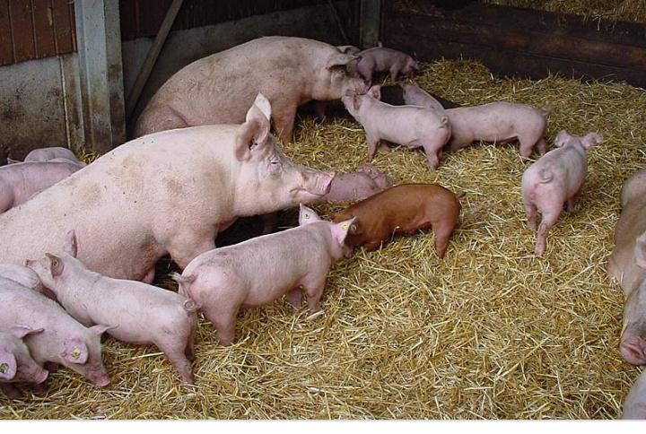

Bienvennue dans cette fermerie
Une petite présentation de ma porcherie
Je dispose d'une très grande porcherie ,avec différentes races de porcs et porcelets . le cochon est un animal de ferme très intélligent ;comme les humains ,le porc est un omnivore,ce qui signifie qu'il mange presque tout .
Pour tout vos besoins de viande de porcs ou de porcelets contactez moi au numero
675691226
Elévage et vente de porcs & porcelets


